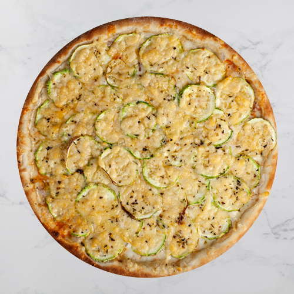

Pizza de calabresa com mozarela
📔Ingredientes
- 🍕 1 receita de massa para pizza de forno
- 🍕 1 receita de molho básico de tomate
- 🍕 300g de calabresa fatiada
- 🍕 400g de queijo mozarela fatiado
- ⏲️Tempo de preparo: 60min

Pizza de quatro queijos
📔Ingredientes
- 🍕 1 receita de massa para pizza de forno
- 🍕 1 receita de molho básico de tomate
- 🍕 100g de queijo parmesão
- 🍕 150g de queijo provolone
- 🍕 150g de queijo mozarela
- 🍕 100g de queijo gorgonzola
- ⏲️Tempo de preparo: 60min

Pizza de abobrinha
📔Ingredientes
- 🍕 1 receita de massa para pizza de forno
- 🍕 1 receita de molho básico de tomate
- 🍕 2 abobrinhas cortadas em rodelas finas
- 🍕 300g de queijo mozarela de búfala ralada ou cortada em fatias
- 🍕 1 dente de alho amassado
- 🍕 4 colheres de sopa de azeite
- 🍕 Sal a gosto
- ⏲️Tempo de preparo: 50min